Pocket Panda Guide
Use: website hero and main advertising. Keep the full panda, phone and destination story together.
VisePanda helps international visitors make China feel exciting, navigable and full of small local magic. It speaks like a cheerful travel buddy—not a cold travel dashboard or an official authority.
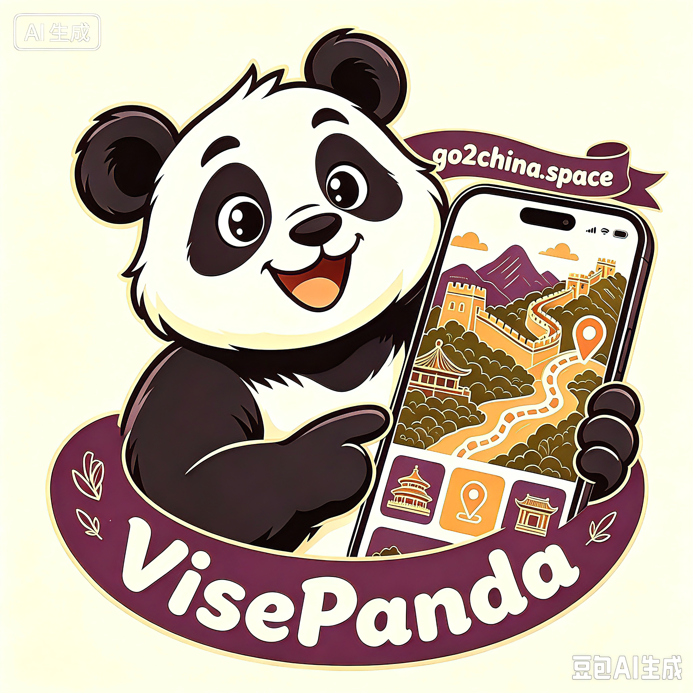
Archetype: The Guide, with the warmth of a Caregiver. VisePanda helps a visitor take the next useful step without sounding like an authority or a transaction funnel.
Promise: Make China feel easy, welcoming, and wonderfully yours.
One defining word: Reassurance.
Warm before clever. Resourceful when plans change. Playful without being distracting. Clear in every instruction. Respectful of travellers and local culture.
Unlike booking-led travel platforms, VisePanda stays beside the traveller as a local China guide before, during and after the itinerary.
Use the supplied SVG as the master. Keep the panda, phone, lower VisePanda ribbon and go2china.space ribbon together whenever space allows.
Clear space: leave at least one panda-eye diameter around the lockup. Minimum size: 120 px wide on screen or 32 mm in print.
Approved grounds: Cream, Butter, Plum-900 and Ink-950. Preserve the Cream sticker edge on dark fields.
These are application concepts for the approved VisePanda master logo—not five replacement logos. Never redraw the panda, replace its type, or remove its Cream sticker identity.
Use: website hero and main advertising. Keep the full panda, phone and destination story together.
Use: App icon, avatar and sticker. A head-and-phone crop is permitted only when the original master artwork is used.
Use: maps and itinerary cards. Extend the Gold route language around the mark; do not add a competing symbol.
Use: events, posters and video end cards. Let the Plum ribbon carry the name and URL with generous breathing room.
Use: launch screens and destination stories. The phone screen becomes a contextual travel window, never generic cultural decoration.
Plum creates recognition, Ink provides clarity, Gold points to discovery, and Cream lets the system breathe. Gold is always an accent—not the only carrier of essential meaning.
Cream 45% · Plum 25% · Ink 15% · Gold 10% · Butter 5%.
Cream for breathing room; Ink for text and edges; Plum for fields; Gold for routes and CTAs; Butter for welcome and highlights.
Pure red + bright yellow, neon blue-purple gradients, or small Gold text on Cream. They weaken readability or pull the brand into the wrong category.
Use short, welcoming language with simple sentence structure. For accurate Chinese place names, use Noto Sans as a compatible fallback. Avoid sharp tech type, condensed type and decorative scripts.
Pairing: Baloo 2 only earns attention in headings; Nunito Sans handles everything readers must scan. Track display text slightly tight, body at normal spacing. Noto Sans is the multilingual fallback; Fredoka is the free display fallback.
“Start here—your first easy win in Beijing.”
“You’ve got this. The metro is two minutes away.”
“Your train leaves from Beijing South—give yourself 20 minutes for the station.”
“Our AI solution optimizes your travel journey.”
“The ultimate China experience is guaranteed.”
Do not sound bureaucratic, overpromise, or imply official authority.
The Guide keeps its round white face, dark patches, wide delighted eyes, open smile, phone prop and Cream sticker edge. It is a helpful companion—not an official, a safety authority or a cultural costume.
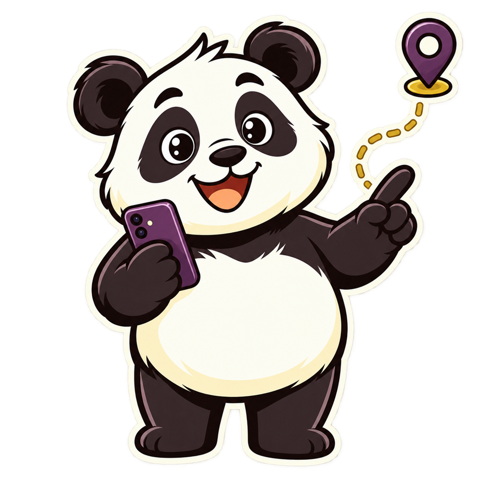
GuideItineraries & maps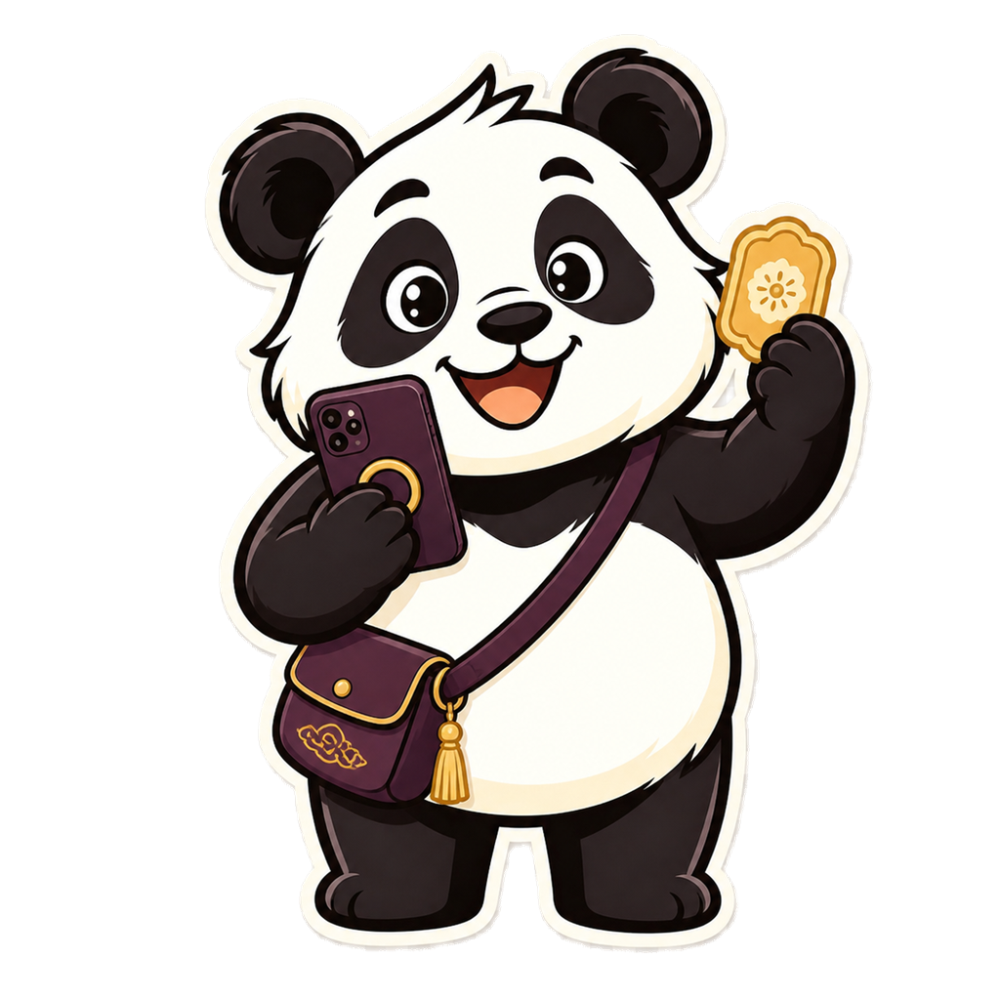
RecommendFood & gems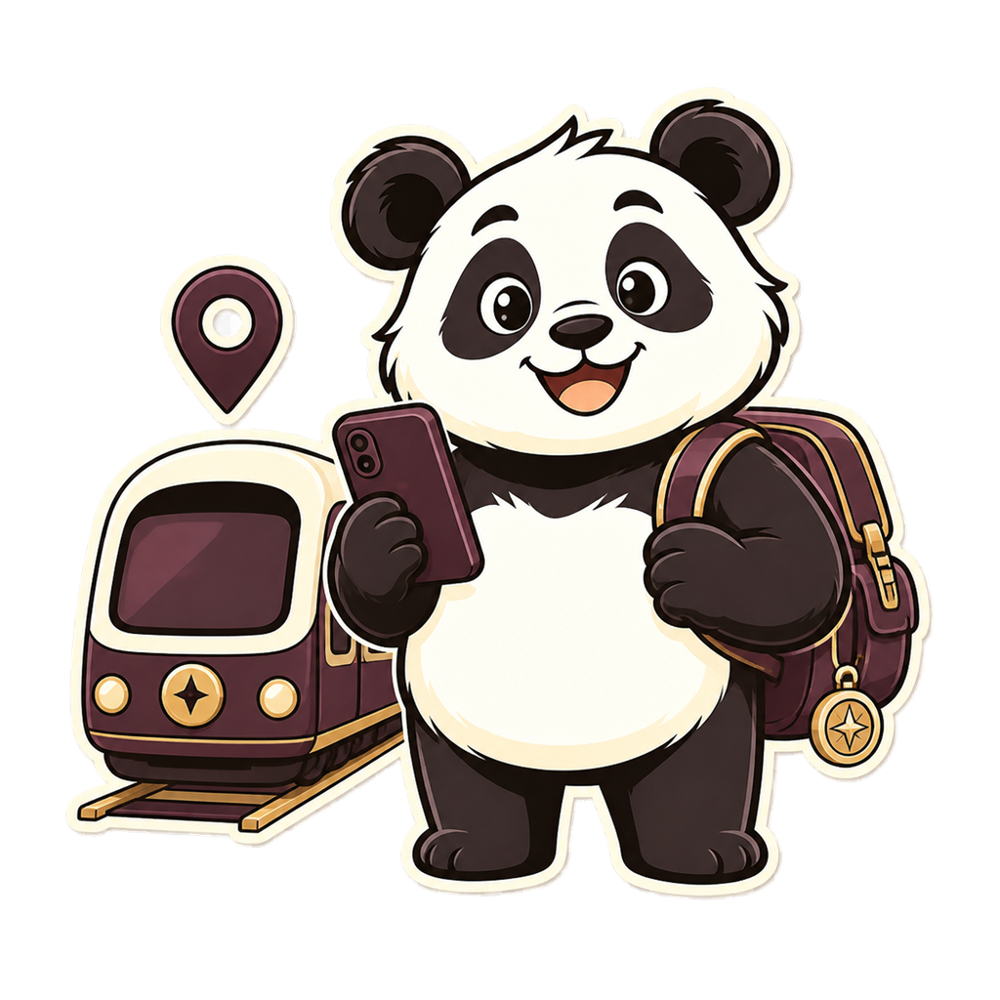
TransitRoute updates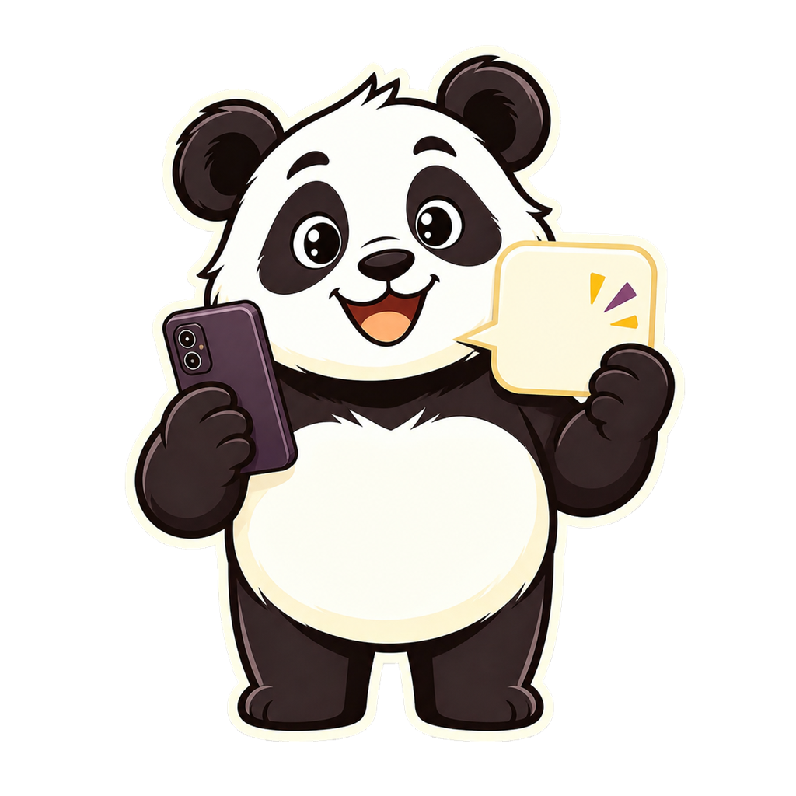
TranslatePhrase help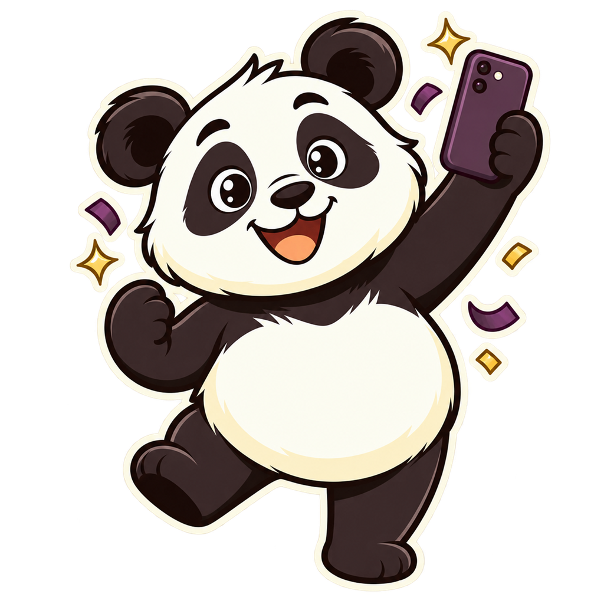
CelebrateTrip moments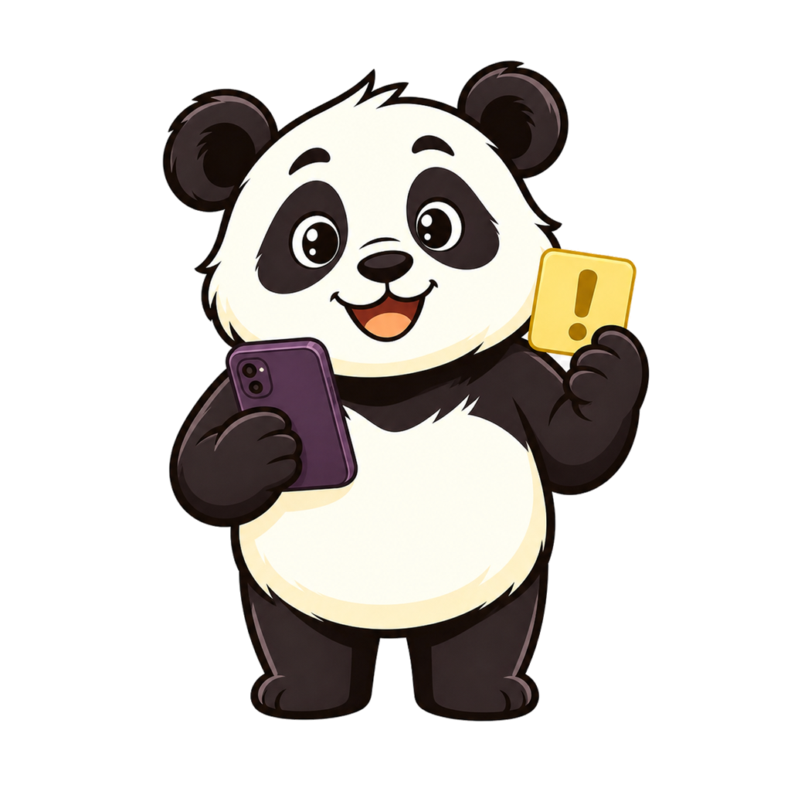
Gentle alertTime-sensitive tipsBuild illustrations from a scenic window, a simplified landmark appropriate to the actual destination, a hand-drawn cloud and a curved Gold route. Use quiet space. Landmark choices can include the Great Wall, Temple of Heaven, West Lake, Zhangjiajie, Shanghai skyline and Xi’an City Wall when contextually true.
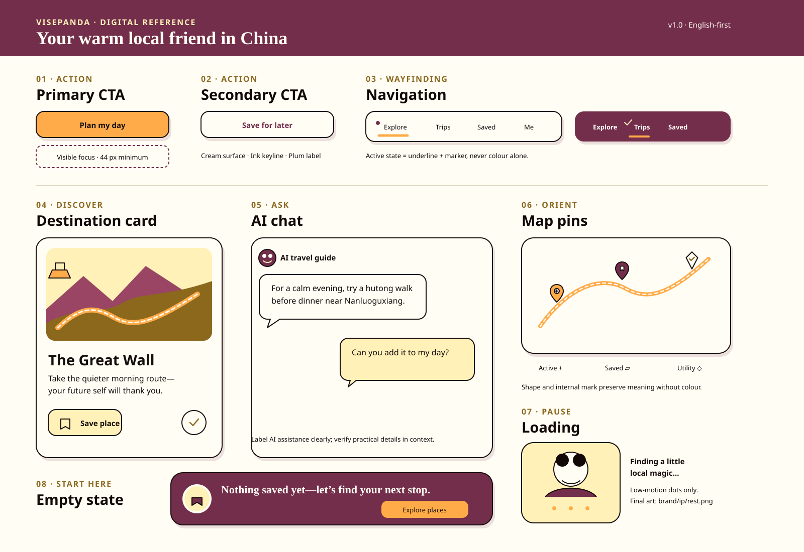
Controls are 44 px minimum. Every active state gets a shape, label or underline as well as colour. AI guidance stays clearly labelled and never claims official authority.
Be compact, encouraging and specific: “Your train leaves from Beijing South—give yourself 20 minutes for the station.” Avoid bureaucratic language, hype and unqualified guarantees.
Never imply official visa, transport, emergency, government or booking authority.
Routes, locations, CTAs and safety information always beat decoration.
Plum, Gold and the Cream sticker edge are core recognition assets—not optional styling.
Use tokens/visepanda.tokens.json for colour, type, layout and material values.
Use the named IP state for the moment; never force a cheerful pose into an alert or accessibility message.
Pair every landmark, route and local tip with accurate destination context and accessible copy.
Give every trip tip
a little personality.
Social layouts pair one short hook, a scenic window, one Panda Guide pose and a clear route/CTA. Keep important text, eyes and URLs within the platform safe area.
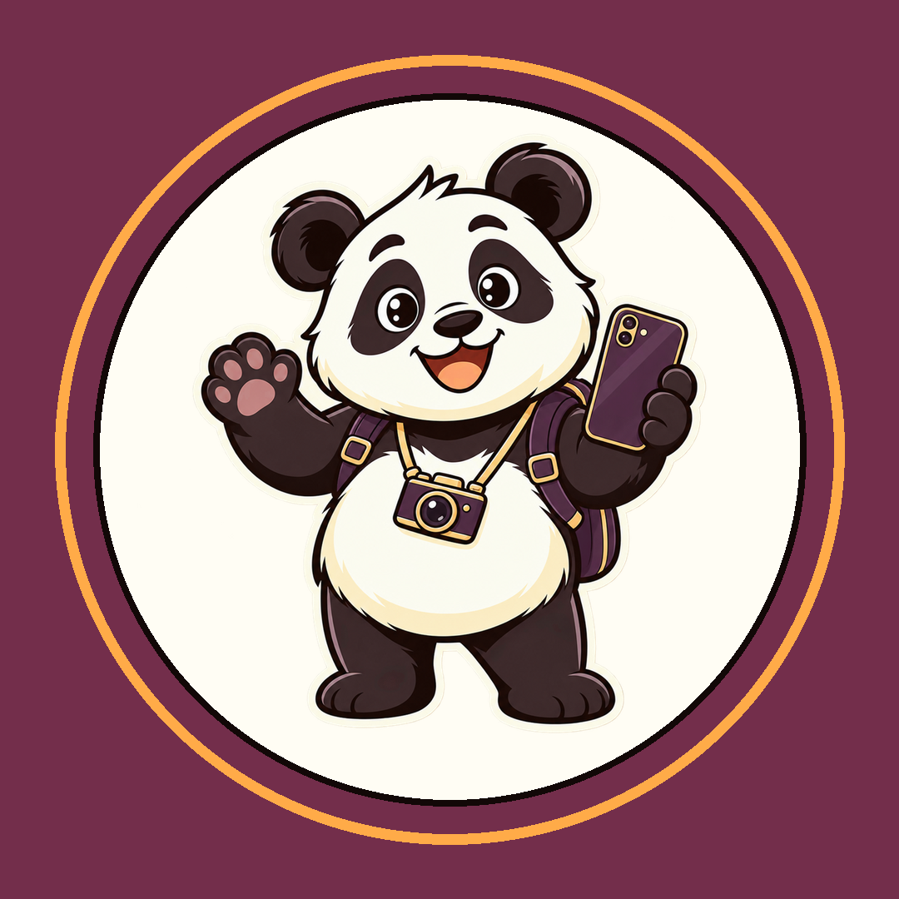
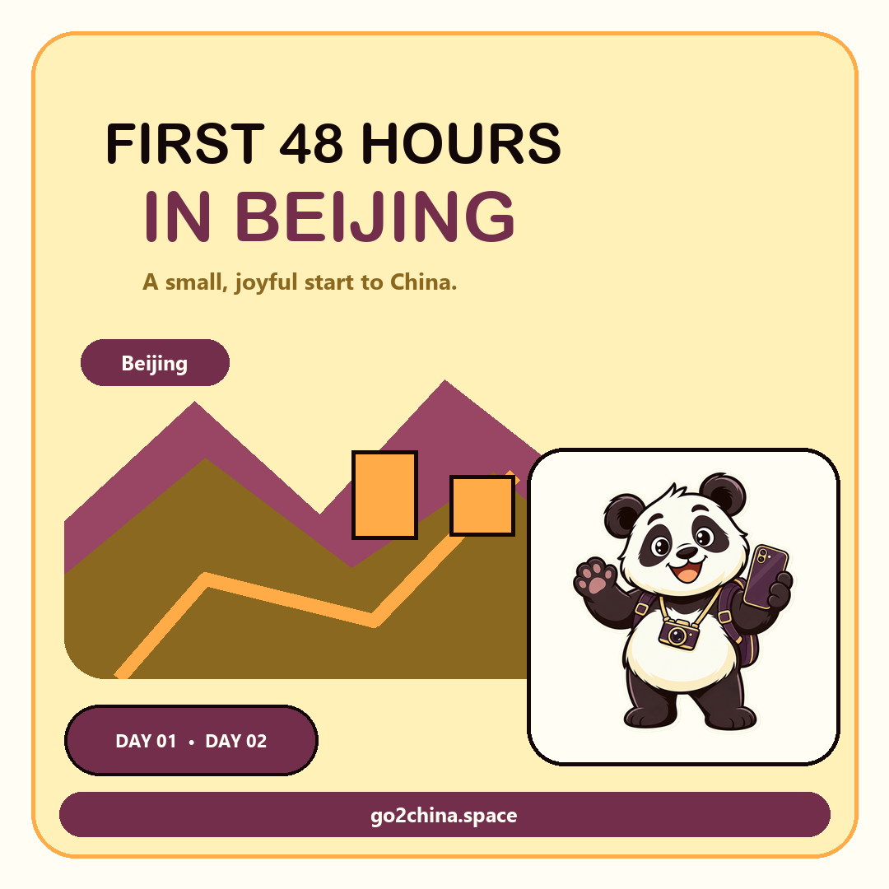
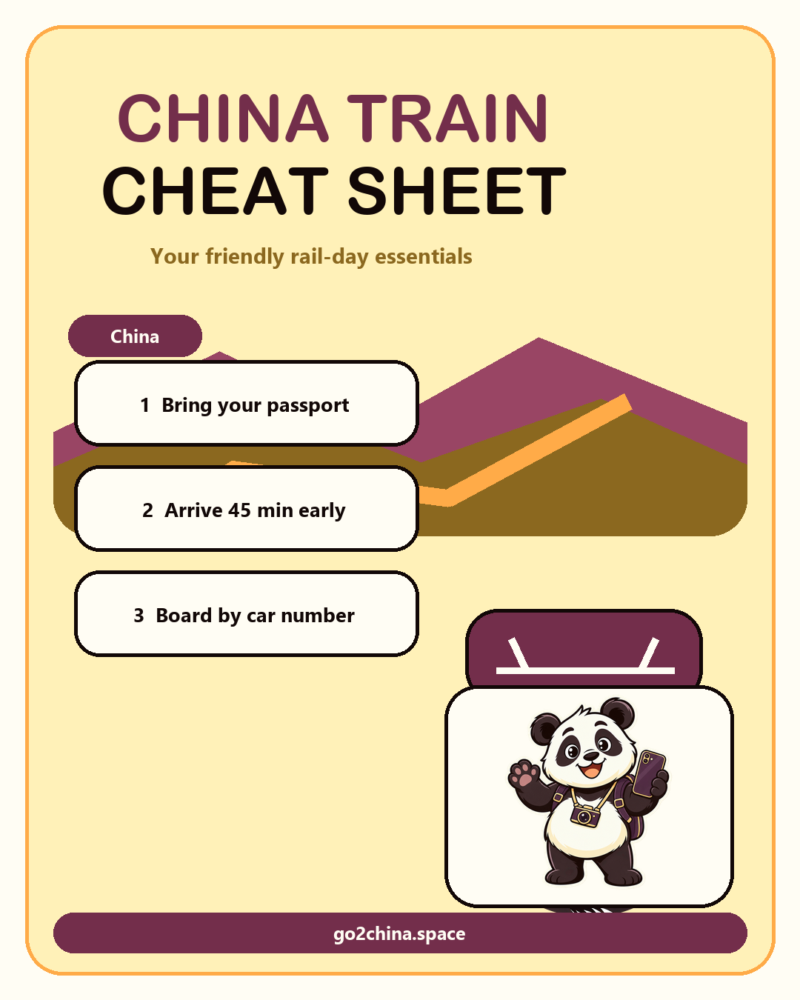
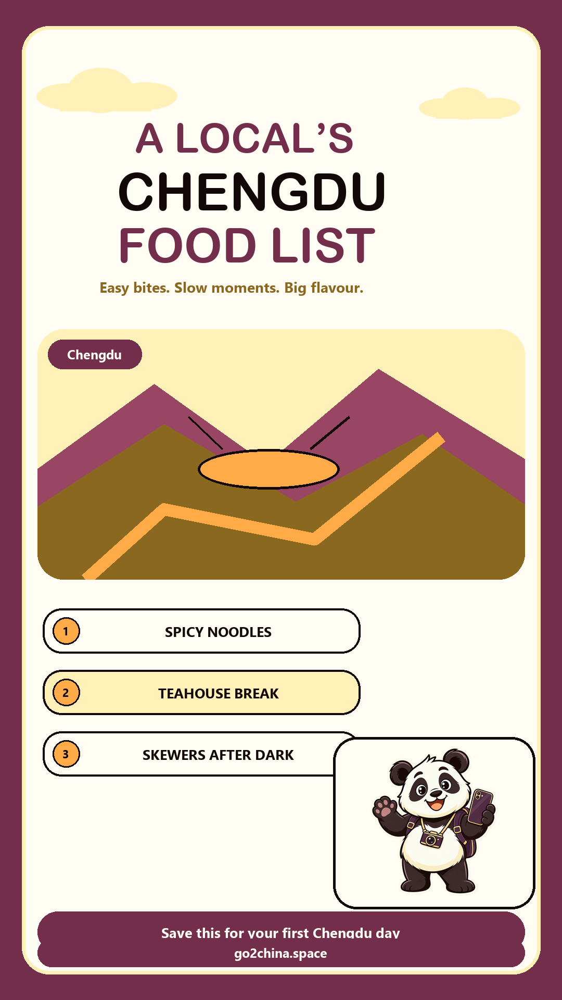
Reusable formula
One 3–5 word English hook, one Guide pose, one Gold route, one accurate destination, and one CTA. Use 1:1 for destination starters, 4:5 for practical cheat sheets, 9:16 for Story/Reels and a Cream end card for video close.
Safe export
Keep titles, URLs, CTAs and panda eyes within the central safe area. Export native PNGs:
topic-1080.png,topic-1080x1350.png, ortopic-1080x1920.png.